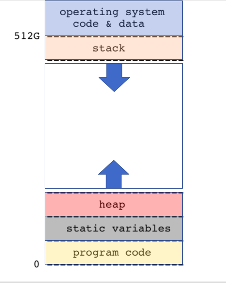

Memory and Pointers
Understanding pointers and the ins and outs of memory usage in your program is a fundamental part of what makes you a strong C programmer! This note breaks down important elements that go into this understanding.
Memory
Address Space
Every process, i.e a running program, gets 512G of virtual memory space. The memory layout is given in the diagram below.

The stack grows downward starting from 512G while the program code, static variables, and heap variables are all at the bottom (0), sitting in that order (Check the diagram above). This means that when functions are called, space for them is built up on the stack and then cleared as they complete. Imagine function calls being stacked on top of each other (but upside down) and then being popped off last to first as they return. The stack is a temporary storage space. Check out this diagram to build intuition on how the stack changes throughout your program.
{kind=link}
The heap is where you dynamically allocate memory - it is a storage space that is not automatically managed like the stack. You use the heap if you want to manage how long something is stored in memory, which means you are responsible for clearing any space you allocate on the heap. You also use the heap if what you’re storing is considerably large. This is because there is an OS dependent limit on how much data can be stored in the stack, so the heap is a good choice if you don’t want your storage needs to saturate your stack. Also note that unlike the stack, the heap grows upwards (towards the stack).
Variables
Stack Variables
When you declare a variable in C, it is defined for the current scope and will be released (removed from memory) at the end of the scope. If you re-declare a variable inside a scope within a ‘nested’ scope (see below), you won't be able to change the outer variable.
The variables inside the curly braces are stack variables (also known as automatic variables), and are stored on the stack. Their scope is local to a block (meaning code enclosed by curly braces, as shown above). They are created (pushed on the stack) when entering the block and destroyed (popped off the stack) upon exit.
Static and Global Variables
Static and Global variables are stored in the static section of the C memory layout (see diagram above). 'static' has different meanings depending on where you declare your value. In general, global and static variables are created when the program runs, and they persist until the program ends. They have the lifetime of the program. They cannot be re-declared or re-initialized.
static int file_static = 0; // static global variable
int foo(int auto_1) {
static int block_static = 0; //static variable
}
A static global variable is declared by using the ‘static’ keyword on a variable declaration outside of any code blocks in the file, i.e outside of any function. Its scope is limited to the current file. It’s accessible anywhere in the file it is declared in, but not in any other file.
A static variable is declared by using the ‘static’ keyword on a variable declaration inside a function. It is initialized once and retains its value over successive calls of that function, as shown here (source):
int foo()
{
static int x = 5; // assign value of 5 only once
x++;
return x;
}
int main()
{
printf("%d\n", foo()); // prints 6
printf("%d\n", foo()); // prints 7
return 0;
}
A global variable is like a special case of static variables. It is accessible from all files in the program, and can be accessed from other files using the extern keyword. See below:
In one file:
In another file:
Pointers
Pointers are what will get you a job. Understanding pointers is crucial and using them naturally will make you stand out as a programmer. Let's start with the basics.
Pointer: A variable that stores a memory address. That's it.
There isn't just one data type called "pointer". Every pointer is a pointer-to-type, which encodes how to interpret the bytes you find in the memory address.
In a variable declaration, an asterisk denotes the fact that the variable is a pointer.
Here's an example:
Spacing of asterisk doesn't matter, but *p is generally preferable as it
makes declarations clearer. int* p1, p2; would lead you to assume that both
p1 and p2 are being declared as type int* (a pointer to an integer), but in
reality the compiler interprets this statement as if it was written
int *p1; int p2; - declaring p1 as a pointer to int and p2 as a normal int.
Writing the declaration as int *p1, p2 will avoid confusion in such cases.
Using basic pointers
There are two basic operators that you use with pointers:
The & operator references a value, ie it gets the memory address of an
already existing variable. It could then be stored into a pointer.
The * operator dereferences a pointer: it follows the pointer and gets the
thing it points to.
& and * are basically opposites: & adds a level of indirection taking you
further from the underlying value, while * removes a level, brining you
closer. So *&x is the same as x, as is *&*&x.
There are limits though. Why do you think &&x is not valid? (Spoiler: because
&x is just a transient value of type int *, it's not a variable in memory,
so you cannot get its memory address with the & operator).
Ok, so why use pointers?
C is a call-by-value language which means all arguments to functions are copied, and a local copy is made on that function's stack. Changes made inside the function are not reflected on the outside. Therefore if you want a function to modify a value that you have, you'll have to tell the function where to find the that value by memory address, not just give it the value:
void increment(int a) {
a++;
}
void actually_increment(int *b) {
(*b)++;
}
int main() {
int x = 1;
increment(x); // x is still 1
actually_increment(&x); // x is now 2
return 0;
}
Note not only the difference in the function, but how the parameters are passed. Passing a pointer is fundamentally a different type than passing a value.
For more pointer examples, see E-Memory-Pointers/code/basicpointers.c.
Arrays ##
As per the C99 Standard:
An array type describes a contiguously allocated nonempty set of objects with a particular member object type, called the element type. Array types are characterized by their element type and by the number of elements in the array.
What exactly does that mean? Let's look at an example declaration and try to figure out.
This would allocate space on the stack for 10 elements of type int. The array is in contiguous memory locations. i.e., a[1] is located immediately after a[0].
Within the scope they were declared, arrays generally operate like you're used
to in Java or other languages:
However note that arrays in C have no bound checking, so you can read/write an element past the end of the array. It may even work, at least most of the time, but it's undefined. Valgrind testing can catch some of this, and compiler warnings might catch others, but it's up to the programmer to be careful.
Declaring multidimensial arrays is also possible, but fairly rare.
The size of an array in C is returned by the sizeof() operator.
The sizeof() operator returns the number of bytes occupied by the array. In this case, a is an array of 10 int elements. The sizeof(int) is 4, therefore the sizeof(a) = 40.
Pointer Arithmetic ##
If you have a pointer, you can do basic arithmetic with it to address adjacent
elements. All arithmetic is with respect to the type of element being addressed,
so if you have an int pointer int *p, p+1 points to the next int, which is 4
bytes later. Think in terms of elements, not in terms of bytes.
int *p = q; //p is a pointer to int; it's pointing to the same place as q, exactly where doesn't matter now
p+1; //this is a pointer-to-int that's point to an integer that immediately follows p
*(p+1); //this is an integer, the dereferenced value pointed to by the previous line
*p++; //this returns the current derefenced value (ie the integer), and advances the pointer to the next element
//the above is VERY common when looping over arrays in C
Arrays and Pointers ##
You may have heard that "arrays are pointers." While this is not true, arrays and pointers behave very similarly and it is important to know the differences!
Jae's Grand Unified Theory of Pointers Also known as Jae's GUT
Given pointer
pof typeT*and integeri*(p+i) == p[i]
What does this mean? And how does it unify anything? Let's break it down.
Given any pointer p of type T*, we can use pointer arithmetic to get the address of the next element with p+1. This address is sizeof(T) bytes after p. If this doesn't make sense, review the pointer arithmetic section above!
We can understand p+i in the same way as above. The address returned by the expression is sizeof(T) * i bytes after p, or the address of the ith element of type T after p. E.g. i=3, and T is a char, then p+i returns a char * that holds the address three characters after p.
Does it make sense that p+i is 3 bytes after p? If not, make sure to understand before moving on!
What Jae's GUT says, other than feed me, is that the p[i] is exactly the same thing as *(p+i). Essentially, we can use the square brackets [] with a pointer to find the address of the ith element away from p. Then we can dereference the new address and voilá, we have the ith element itself!
If this is sounding a lot like an array, that's because it basically is! If we set a pointer to the beginning of an array, we can use the exact same syntax to access the elements in the array that we want.
int a[10] = {0, 1, 2, 3, 4, 5, 6, 7, 8, 9};
int *p = a; // p points to the first element of `a`, 0
int *p = &a[0]; //p still points to 0
*(p+5) == a[5]; // 5 == 5
p+5 == a+5; // p+5 is a pointer to the 5th element of the array, so is a+5
Jae's GUT goes the other way too! Arrays, in cases of pointer arithmetic, operate as pointers to the first element.
i.e. Given an array
aof typeTelements a+1 == &a[0]+1
So aren't pointers and arrays the same? Wrong! Here are the cases in which arrays do not act like pointers.
sizeof operator
As mentioned above, the size of an array is
Note that as discussed above, sizeof is an operator, not a function.
Which means that for classic C sizeof is evaluated at compile time, so the
value of the operator cannot be anything that depends on user input.
Array is a constant variable
int a[10] = {0, 1, 2, 3, 4, 5, 6, 7, 8, 9};
int *p = a; // p points to the first element of `a`, 0
p++; // ok: `p` is just a pointer like any other, p now points to the next element in the array
a++; // illegal (will throw an error): `a` is an array name, a constant variable
Unlike a pointer, though, an array is a constant variable. You cannot change its assignment after it has been created, it must point to the same chunk of memory.
Arrays cannot be passed into functions
Note that once you pass an array into a function, the array becomes a pointer to
the first element, and loses all its array-ness. So within the scope where int
a[10] was declared, sizeof(a) returns the number of bytes of the array a,
ie 40. But if you pass a into a function as arr, then sizeof(arr) is NOT
40, but 8, the size of a pointer.
Strings in C
Strings in C are just a special case of arrays: C strings are arrays of characters with a null terminating character at the end.
char c[] = "abc";
char c[] = {'a', 'b', 'c', '\0'}; // equivalent to the above line
char *s = "my string"; // modifiable pointer
"my string"[0] == 'm'; //true!
There's a slight difference between these two definitions. c is an array which
means you can't move where it points to: it's always going to point to the character
a. s, on the other hand, can be incremented and decremented and moved around
however you like. "my string", however, can't be modified; it's a string literal!
Some useful string functions (need to #include string.h):
char d[20];
char c[] = "abc";
strcpy(d, "123");
strcat(d, c);
printf("%s\n", d); // prints 123abc
printf("%lu\n", strlen(d)); // prints 6
strncpy(d, "456", 2); // only copy first n chars
d[2] = '\0'; // null terminate string
strncat(d, "def", 2); // only cat first n chars
printf("%s\n", d); // what does this print?
For a closer look at the strcpy function, see E-Memory-Pointers/code/strcpy.c.
So how about an array of strings? Well that would be an array of arrays.
char *a[] = {"hello", "world" };
char **p = a;
char a[][10] = {"hello", "world" }; //what's the difference here?
You can find more examples of this in E-Memory-Pointers/code/ptrtoptrs.c.
Heap allocations
Sometimes you need memory to persist across function calls (recall pseudo-pass-by-reference using pointers). Recall also that variables declared within a scope will be cleared once the scope's stack frame collapses. In other words, if you're trying to pass back a pointer to a variable that was declared within the function as a return value, it won't be there when you try to access it. To alleviate this you can allocate space on the heap using malloc.
(From Jae's notes)
int *p = (int *) malloc(100 * sizeof(int));
// malloc returns NULL if it cannot allocate the requested memory
if (p == NULL) {
perror("malloc failed");
exit(1);
}
// initialize all elements to 0
for (int i = 0; i < 100; i++)
p[i] = 0;
// another way to do the same thing
memset(p, 0, 100 * sizeof(int));
//free() deallocates the memory block previously returned by malloc.
free(p);
Memory Errors
You'll be testing your code with valgrind for this class to make sure you don't have any memory errors in your code. This can include forgetting to free allocated memory, accessing memory that doesn't exist, etc. To run valgrind call:
valgrind --leak-check=full ./your_executable
Recall from other classes that if valgrind doesn't return, it means your program
isn't returning (this is a case of the halting problem). If your valgrind isn't
giving you line numbers (and is giving you hex codes) then you're not compiling
with the debugging flag -g.
The following are excerpts from recitation-4-code/invalidwrite.c and
recitation-4-code/leak.c.
Valgrind+Makefile=Good
Remembering to run valgrind, and retyping the command, is annoying. A clever way to more easily run valgrind repeatedly as part of your normal edit/compile/test loop is to add valgrind to your makefile. Remember how you can include phony targets in your Makefile? We can use that to have it run Valgrind for us.
For example, using Jae's Makefile template from lecture note 1, you can add a stanza at the end:
Then instead of running make followed by ./main you can just run
make valgrind and it will compile your code and run it under valgrind.
Invalid Write
This is pretty easy to do but hard to catch in your code. Like many memory errors its usually caused by an off-by-one error. Imagine this:
int *p = (int *)malloc(sizeof(int));
// checking that malloc worked
if (p == NULL) {
perror("malloc failed");
exit(1);
}
You'll have a pointer, p, to one integer worth of space. Now imagine we move
our pointer ahead one integer
p will now point past the space it was allocated. We know nothing about this
space. It could be accessible, it could be protected. It could be someone else's
variable that we're about to change. This is terrible. But let's mess around
with it.
What happens? You've got an invalid write. What about
Now you've got an invalid read. Valgrind will tell you about these and where they're happening. So long as you know what you're looking for you should be able to find it.
Memory leaks
Calling malloc without free-ing the memory you've allocated is awful. You're
taking away memory from other running processes. To correct for this, when
you're finished, just call free() on the pointer to the memory that was
malloced.
Now aside from those invalid read/writes, our program will run through valgrind pretty happily. The trick to memory leaks isn't just in free-ing that integer though. Imagine you've malloced space for an array of arrays, each of which was also malloc'ed. You'll have to go back through, freeing each individual array, and then when you're finished with that, free the higher order array.
Uninitialized values
Valgrind will also inform you when the visible behavior of the program is affected by usage of uninitialized values. For example, let's say you want to increment a variable, but forget to initialize it:
Valgrind will inform you that the visible behavior of your program depends on an uninitialized, hence unpredictable, values. Always be sure to initialize your variables before using them!
Lab 2
Tips:
- Test all your code with valgrind. Just do it.
- Watch out for fence post errors when it comes to invalid read/writes. You're
probably just one outside of your bounds
- Watch out for being just inside your bounds on freeing. If you have a leak,
its probably because you forgot to free one last element.
- Don't forget that in C, strings are characters arrays followed by a null
character. Without the null character, C has no idea where your string ends!
- ALWAYS check the return value of malloc to make sure you were actually given
allocated memory.
- Name your executables properly. For part1, isort and for part2, twecho.